正文（注：未填写内容的正文目录将不会显示在词条页上）
人物生平
1906年，经黎渊推荐入保定陆军军官学校 / 保定陆军军官学堂 / 北洋陆军速成学堂第一期，1908年毕业。1910年列辎重科上等照章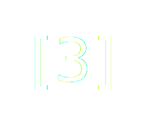，补辎重兵副军校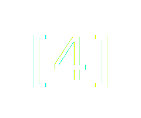
1912年，出任贵州讲武堂教官，陆军贵州测量学校监学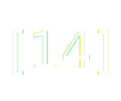
1915年12月 授为陆军辎重兵少校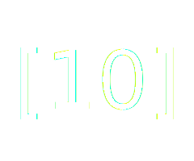
1916年01月 任贵州陆军歩兵第六团团附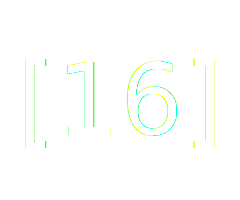
1916年1-3月 作为贵州陆军歩兵第六团代团长参与讨袁护国战争，任护国军滇黔联军（司令蔡锷）右翼军（司令戴戡）右支队指挥。在綦江战役中，兵出松坎，激战北洋军。指挥所部攻克青羊寺。
1916年10月, 因其在讨袁护国中战功获颁四等文虎章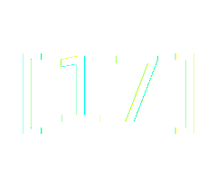，六等文虎章各一枚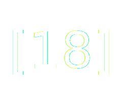。
1917年02月, 任暂编贵州混成旅步兵第二团团长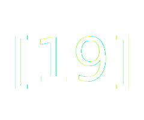，同年随该旅保护被任命为四川省长兼督军的戴戡入川，7月激战于对入川黔军来说九死一生的川滇黔战争。兵力不足七千的混成旅激战数万川军，几乎全军覆灭，仅数百人生还。11月王文华指挥黔军3个纵队再次入川混战，期间第1纵队长袁祖铭屡建战功，未得升迁。刘显世借机授袁为黔军二师师长，以制衡王文华。胡忠相1918调任黔军二师参谋长。但不久后在黔军内部争斗中黔军二师建制被取消。从此胡在黔军的建制中未再被提及。应该是厌倦了战争的杀伐和权谋争斗，淡出军界。
1918年解甲后不再担任一线军职，历时约十载修建私宅胡氏山庄。现被列为遵义市及贵州省的文物保护单位胡氏民宅，亦称胡公馆。
在周西成主政贵州时期，作为周幕后顾问参辅军政。1925年11月，加陆军少将衔。
1937年 出任遵义县老残救济院首任院长，组建老残救济院
1940年 作为遵义主要士绅代表协助浙大校长竺可桢浙大西迁贵州的相关事宜
1941年 邀丰子恺，赵乃康（恺）等同游子午山、拜谒沙滩三贤墓地、故居。 参与并协助基于此行所创作的《子午山纪游册》出版，由同行的赵乃康、丰子恺、李瑜三人编辑，以老残救济院下辖的遵义孤儿所为发行印刷单位。
1941年11月响应抗日的[一元献机]运动，倾以其寿仪（70寿辰）两千元全数捐献，县府呈请予以嘉奖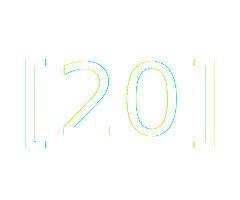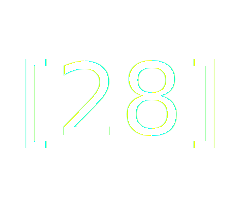
胡忠相于1945年5月去世，享年74岁
个人作品
胡忠相毕业于保定陆军学堂辎重科，又做过陆军贵州测量学校的教官。具备建筑设计施工相关职业技能，结合其文化素养及人脉，历时10载，修建家庭庄园胡氏山庄（胡公馆），并利用其传承当地沙滩文化。胡公馆坐北向南，建筑考究，气势恢弘。整个建筑群彰显黔北建筑风格，其主体是传统木结构的青瓦房，平面布局为双四合院，一楼一底，占地约六亩，左右皆有花园。公馆有正厅、左右厢房、前厅等房屋共二十余间，房屋结构考究，窗花雕工精细，楼宇错落有致。庄园外以青砖砌墙环绕包围，白灰细粉涂刷。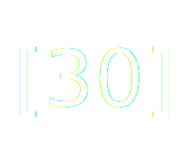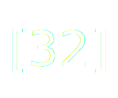
胡公馆和同属于遵义县禹门乡（民国时期）位于遵义城东八十余里洛安江畔的沙滩相邻，胡氏庄园地处从遵义城到沙滩及郑莫黎三贤墓的必经之路，也就自然成为了相关活动的接待和食宿的首选之所。于1937年接待了参加首次祭奠郑莫黎三先生活动的政府官员及社会名流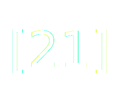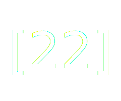；并于1941年2月2日到6日再次邀请接待了赵恺，丰子恺，李瑜等一行五人，同游子午山、共谒三贤墓。此行催生了《子午山纪游册》。
2022年8月19日，胡公馆再次接待了由遵义市历史文化研究会主办的纪念《子午山纪游册》刊行八十周年暨浙大西迁与遵义文化研讨活动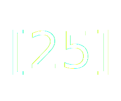。
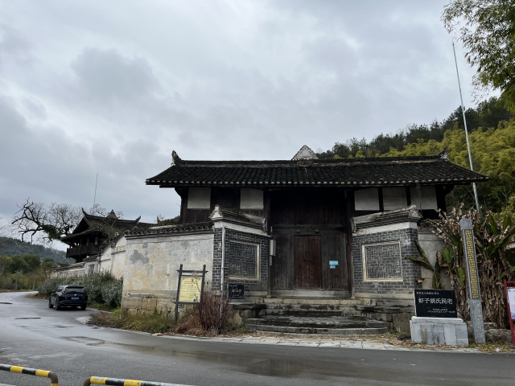
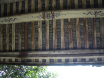
诗文 “山庄即事”，收录于《子午山纪游册》
人间已是传三绝，
座上于今称二难。
一自莼斋推郑莫，
频教蹑屐向林峦。
注解： “三绝”指在坐的有诗人、书法家、画家，诗书画三绝；“二难”出自《滕王阁序》的“四美据，二难并”，指盛情的主人与能风雅互动的宾客难得同时在场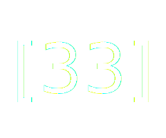。反映出作者为促成此次沙滩雅集排除万难的心境。见下图原版诗文及丰子恺画笔下的胡氏山庄，来自《子午山纪游册》
1929年在得知周西成不幸阵亡的消息后，作诗一首以寄哀思。
祥狮山下乐耕耘，为有东征早树勋。出师未捷身先死，三年两次吊将军。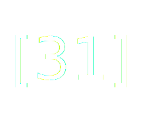
主要成就
护国战争黔军重要将领
1916年起任贵州陆军歩兵第六团团附长。同年2-3月 作为贵州陆军歩兵第六团代团长参加蔡锷发起的讨袁护国战争。在綦江之战中，接替临战出走的 “黔军”六团团长，任护国军第一军（滇黔联军）右翼军右支队指挥，率部攻克青羊寺，协防分水岭。护国战争中一战成名，荣获军功。
修建私宅胡公馆
1918年，胡忠相年近半百不再担任一线军职，开始在家乡修建私宅山庄，历经十载修建完成。其时与胡忠相有师生之谊的贵州省主席兼二十五军军长周西成送书有“陆军少将第，忠相恩师府第落成”的金字黑漆巨匾，右上方题写“忠相恩师府第落成志庆”，左下方落款：“周西成率子国鼐、国鼒敬贺”。另据当地民间的说法，周西成还授意当地政府修了一条从遵义至湄潭大道中间的车水（今溪水）直通胡公馆的公路，并为胡献之家架设了专用电话，以方便对外联络。庄园主人则自名为“怡庐”，篆刻于前院入口的照壁之上，字的下面配有反应当地沙滩文化所崇尚“渔樵耕读”的浮雕。背面上书“棠棣增荣”四字，出自胡忠相好友，民国时期遵义杰出文化人物，沙滩文化传人赵恺(迺康)的手笔。公馆过厅的房梁上画有兼具中西文化印记的“书剑修福”，反映出主人追求中西合璧及文治武功的心境。新中国成立后，庄园曾用于办学长达约半个世纪，最多的时候有师生近400人。其间庄园的部分空房子，曾被用来安置给一些家境困难的百姓安身。直到了21世纪初，农村学校调整，庄园所在的学校停办。2003年12月被列为遵义市级文物保护单位“胡公馆”，2015年5月被列为贵州省级文物保护单位“胡氏民宅”。是革命历史剧《伟大的转折》第1、2集中红军临时指挥部及通道会议的拍摄地点。
支持红军游击队
据中共贵州省委党史资料记载，1936年胡忠相与其侄子胡华生（曾任区长）、童少奇（曾任区长）、陈相余、杨云甫、夏清河等地方知名人士为中共红军遵湄绥游击队筹集了一批枪弹和钱粮，使游击队很快发展壮大
长期参与资助和组织各种社会救济和文化活动
胡忠相乐于助人，在当地年长的百姓中流传着不少其乐善好施的善举。 在其庄园附近修建学堂及通往学堂的道路。供当地孩子免费上学，被当地人叫做学堂堡。 同时也是寺庙以供养出家人。还在附近修建花山场集市。两处遗迹目前仍可见到。在逢年过节“放米”来接济贫困百姓，为江湖名医李群仙提供长期免费食宿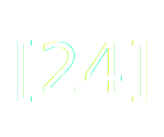。
1937年抗日战争爆发，贵州因其特殊的地理位置成为难民流亡的重要聚集地和中转站，难民问题十分严峻。已是66岁高龄的胡忠相，于1937年组建遵义县老残救济院出任首任院长直至致仕之年（70岁，1941年出生）。
胡忠相深受遵义当地沙滩文化的熏陶，崇尚并致力于保护和弘扬当地文化。1937年吴鼎昌任贵州省主席，将每年阴历三月十日（郑珍的诞辰）定为郑莫黎三先生公祭日，县政府特别委托胡忠相对郑珍墓进行了维修。胡忠相于1937年4月19日和20日连续两天在此宴请和接待了参加首次祭奠郑莫黎三先生活动的政府官员及社会名流。。
据浙大校长竺可桢1940年的日记记载，胡忠相（宪之）曾作为遵义士绅主要代表积极支持和协助浙大搬迁遵义和湄潭的工作。在1940年1月至5月先后5次和竺可桢校长见面。于5月6日至8日，已是年近古稀的胡忠相不辞辛苦陪同竺可桢一行，沿途近7个小时驱车到湄潭考察及协调浙大搬迁湄潭的相关事宜。在8日回程的途中，胡忠相与竺可桢并坐驾驶室，其间介绍了遵义当地的文化名人赵乃康等。5月10日，胡宪之再次来访竺可桢，邀请在下星期到禹门寺考察，并探讨了浙大在禹门寺办一年级的相关事宜。虽然浙大在禹门寺办学的事情后续没有进展，但也反映了胡忠相积极促成其家乡禹门和浙大互利共赢的热情和努力。
另据《子午山纪游册》记载，胡忠相（献之）于1941年2月2日（辛巳年正月初七“人日”）到1941年2月6日间，邀请好友赵恺（赵乃康）、浙大教师丰子恺、乐清才子李瑜（字子瑾）、长沙罗展（字巴山）、江苏武进冯励青访其山庄（怡庐）、共游子午山并同谒郑莫黎三先生墓。五天的游历的所见，所思及所感催生了大部分《纪游册》中的诗、词、文和画。其中许多创作都出自在庄园期间的即席、即景和即兴。其中还收录了胡忠相一首“山庄即事”。《纪游册》的跋中专门颂扬了胡忠相长期守护、修葺郑珍、莫友芝、黎庶昌沙滩三贤墓地的善举，以及盛情款待来访客人之行谊。并感谢了包括胡献之在内的15位《纪游册》出资人。
1941年11月响应[一元献机]运动，倾以其寿仪（70寿辰）两千元全数捐献，县府呈请予以嘉奖。当时多家全国性报刊对此事进行了报道，包括大公报，民国日报。其中民国日报云南版的报道标题为“响应献机运动，黔耆绅捐巨款”
轶事典故
据刘健群在其自传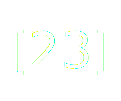中记述，他于1922-23年间在重庆街头偶遇胡忠相，此时他几近身无分文，正发愁接下开的食宿问题。胡看中他必是个可用之才，让他搬接到自己家中，提供免费食宿。并打算推荐他去给周西成做机要秘书。但时机不巧，刘想尽快找到一份工作。于是胡忠相尊重他的意见，帮助安置其进袁祖铭的司令部的军法处做书记官，不久刘健群升任黔军的军法处长，开启了其军政生涯，后成为力行社唯一的非黄埔魁首，1950年12月5日，当选中华民国立法院院长。
并提到胡忠相“表面是在重庆闲着无事，实际是周西成的幕后主要人物”。刘在其另一本作品《小怪李群仙》中这样描述胡忠相 “胡老伯不知是因何缘故，离了军队不做官，而回乡去做绅士。他身体很壮健，欢喜喝点酒。自己是大地主，衣食丰富有余，有时来城，有时居乡，和朋友摆摆龙门阵，替老百姓说说公道话，有正直之誉。土虽豪而绅不劣 ... 可能因为他的正直有德，李神仙才寄住在他的家，绝不是因为他有钱的关系 ”
史料记载
《续遵义府志》 卷十九-选举 33页： 胡忠相陆军部将牟学堂毕业，宣统二年补辎重兵副军校
《中国近代战争史》 第三册， 第十七章 护国战争，第三节 四川战役，第174-176页：... 贵州宣布独立后，刘显世等立即召开军事会议，商订黔军出师计划，决定编滇军炮队、机枪队及黔军第五、第六两团为护国军第一军右翼军，以戴戡为总司令，率部攻打四川綦江，威胁重庆 ... 胡忠相指挥第六团一、二营为右支队，进攻青羊寺 ... 戴戡急命驻青羊寺之胡忠相支队西进，在龙台寺东北之分水岭一带组织防御 ... 胡忠相第六团防守左路，防御由江津来犯之敌...
《中华民国史纪要》民国元年至民国十年， 第395页：民国六年二月五日，黎大总统任命 ... 胡忠相为暂编贵州混成旅第二团团长
《遵义市志》第1475页：遵义县老残救济院，民国26年（1937年）首任院长胡忠相
《中国共产党贵州历史》 第一卷（1921-1949）第153页： 1936年胡忠相 ... 等地方知名人士为中共红军遵湄绥游击队筹集了一批枪弹和钱粮，使游击队很快发展壮大
人物评价
胡忠相是是沙滩文化润育的一代英才，除了他参加倒袁护国的军旅生涯，他还长期从事福利救助等社会活动，他告老还乡后依然崇尚沙滩文化，长期出资协助对郑珍、莫友芝、黎庶昌的墓地进行修缮保护和宣传纪念活动，是《子午山纪游册》的主要推手。为乡邦文化事业多有贡献。
曾对胡公馆宣传保护作过贡献的贵州历史文献研究会副理事长李连昌，上世纪80年代就开始宣传发掘胡氏文化及重视胡公馆的文物价值，并发动村民阻止对胡公馆进行变卖的交易。2022年1月19日他再次去胡公馆拓公馆牌坊上的文字，回程后写下《谨题落石台胡公馆》一诗，诗中可感受到后世对胡忠相一生的客观评价。
始祖湘黔驾贾舟，清康七递至君侯。
北洋发轫入行伍，黔省云程作教头。
护国领军先遣队，建功息影怡和楼。
修文积德闻乡里，一代枭雄风节留。